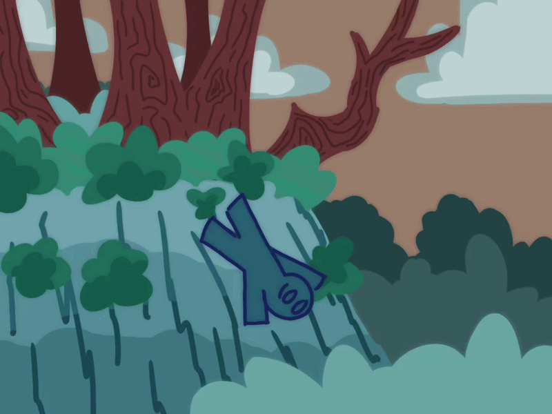

You bolt to the left, running towards the trees… Only to realize the ground is no longer beneath your feet. As you tumble down the cliff side, knocking against branches and scraping yourself on rocks, you begin to question your life choices. But surprisingly, you survive the fall! Unfortunately, you are in a completely isolated section of the wood, and you have no way of getting back where you were. You’ve escaped the monster, but it seems you’re never going to escape these woods.